1.3 坐标系、坐标与坐标变换
从仿射坐标系出发，理解向量坐标运算与基变换。
进度0%
掌握 0 / 3§1.3.1
基、坐标与仿射坐标系
向量 / 坐标系、坐标与坐标变换
为了推广笛卡尔坐标系到坐标轴不相互垂直的情形,

我们需要引入向量的基本定理.
\[
\boxed{{\textcolor[rgb]{0,0,1}{\text{仿射坐标系}}}=\text{点} O + \text{基} \vec{e}_1,\vec{e}_2,\vec{e}_3 \qquad \text{记作} {\textcolor[rgb]{0,0,1}{[O;\vec{e}_1,\vec{e}_2,\vec{e}_3]}}.}
\]
这页感觉如何？
§1.3.2
坐标中的线性运算
向量 / 坐标系、坐标与坐标变换
给定仿射坐标系 \([O;\vec{e}_1,\vec{e}_2,\vec{e}_3]\), 我们用\((x_1,x_2,x_3)\)表示向量\(x_1\vec{e}_1+x_2\vec{e}_2+x_3\vec{e}_3\).
则我们有
证明
\[
\begin{split}
(x_1,x_2,x_3) + (y_1,y_2,y_3) & := (x_1\vec{e}_1+x_2\vec{e}_2+x_3\vec{e}_3) + (y_1\vec{e}_1+y_2\vec{e}_2+y_3\vec{e}_3) \\
& = (x_1+y_1)\vec{e}_1 +(x_2+y_2)\vec{e}_2 +(x_3+y_3)\vec{e}_3 \\
& =: (x_1+y_1,x_2+y_2,x_3+y_3)\\
\lambda(x_1,x_2,x_3) & := \lambda (x_1\vec{e}_1+x_2\vec{e}_2+x_3\vec{e}_3) \\
& = \lambda x_1\vec{e}_1+\lambda x_2\vec{e}_2+\lambda x_3\vec{e}_3 \\
& =: (\lambda x_1,\lambda x_2,\lambda x_3)\\
\end{split}
\]
这页感觉如何？
§1.3.3
坐标变换
向量 / 坐标系、坐标与坐标变换
给定两个仿射坐标系 \([O;\vec{e}_1,\vec{e}_2,\vec{e}_3]\) 和 \([O';\vec{e}'_1,\vec{e}'_2,\vec{e}'_3]\).
为了回答这一问题，我们需要给出两个坐标系之间的位置关系:
-
设\(O\)在\([O';\vec{e}'_1,\vec{e}'_2,\vec{e}'_3]\)下的坐标为\((x_0',y_0',z_0')\). 即\[\overset{\longrightarrow}{O'O} = x'_0\vec{e}'_1+ y'_0\vec{e}'_2 + z'_0\vec{e}'_3.\]
-
设\(\vec{e}_j\)在基\(\vec{e}'_1,\vec{e}'_2,\vec{e}'_3\)下的坐标为\((a_{1j},a_{2j},a_{3j})\).即\[ \vec{e}_j = a_{1j}\vec{e}'_1+ a_{2j}\vec{e}'_2 + a_{3j}\vec{e}'_3.\]
然后\(P\)在两个坐标系下的坐标之间的关系式可写为后续,通过矩阵乘法可简化为 \(X'=AX+X_0'\).：
\[
{\textcolor[rgb]{0,0,1}{\boxed{
\begin{split}
x' &= a_{11}x+a_{12}y+a_{13}z+x_0'\\
y' &= a_{21}x+a_{22}y+a_{23}z+y_0'\\
z' &= a_{31}x+a_{32}y+a_{33}z+z_0'\\
\end{split}
}}}\qquad
{\textcolor[rgb]{1,0,0}{pf: \overset{\longrightarrow}{O'P} = \overset{\longrightarrow}{O'O}+\overset{\longrightarrow}{OP}.}}
\]
这页感觉如何？